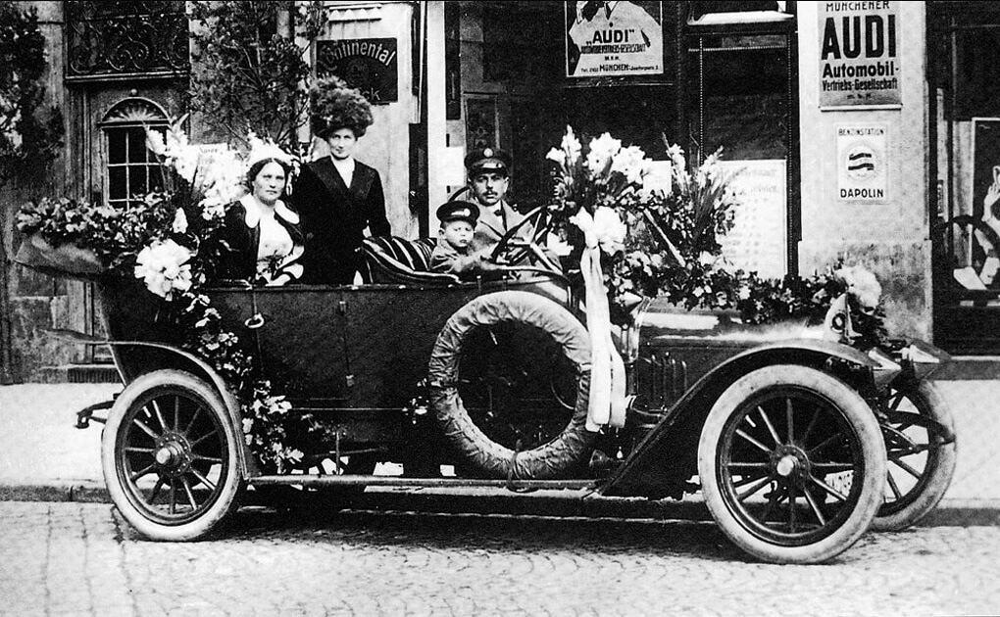
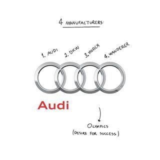
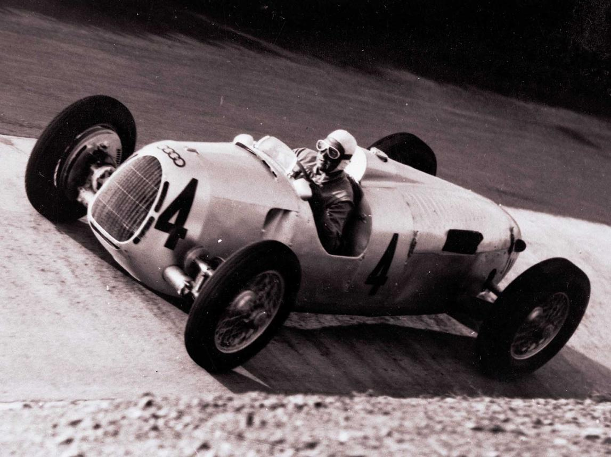
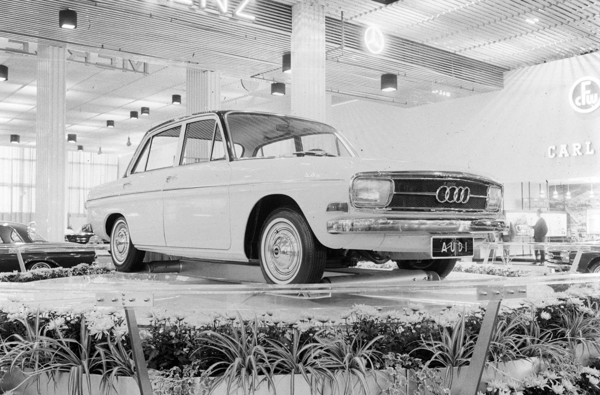
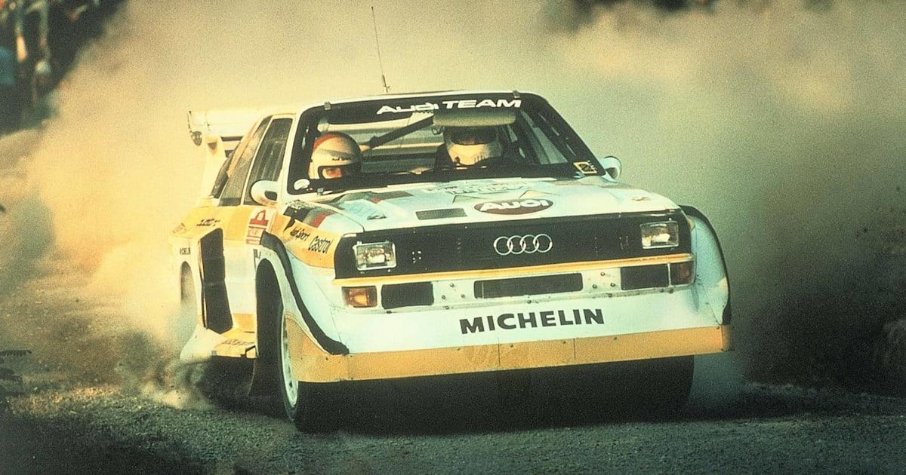
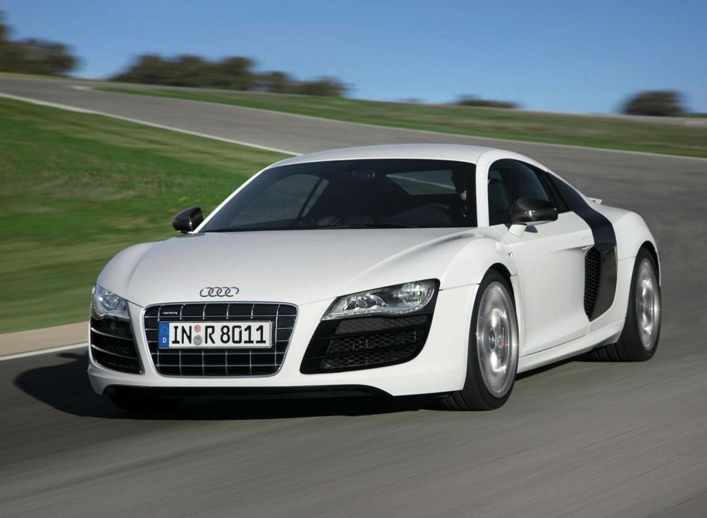
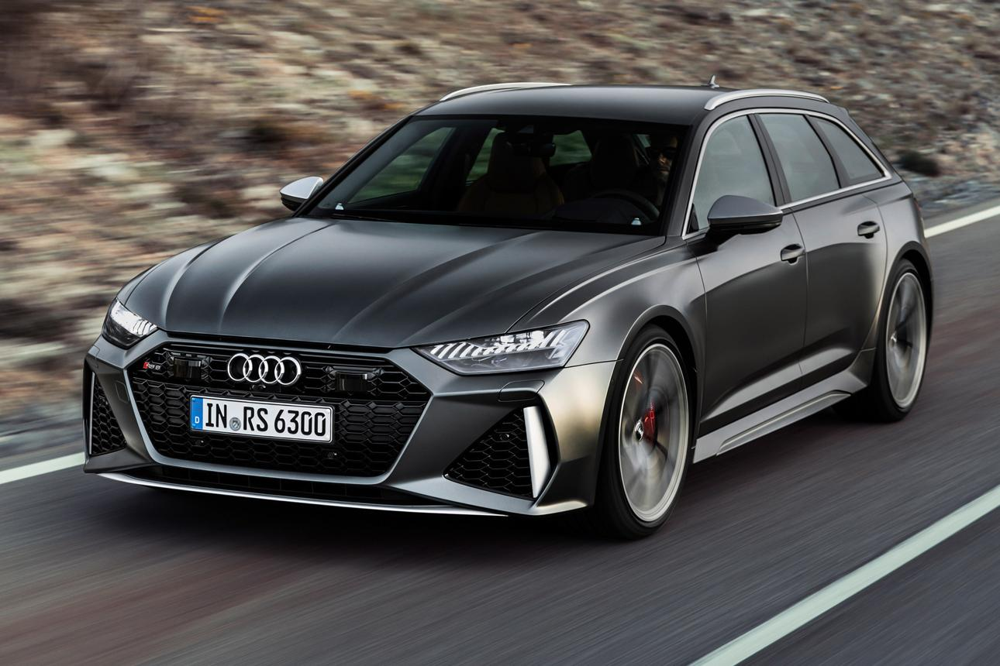
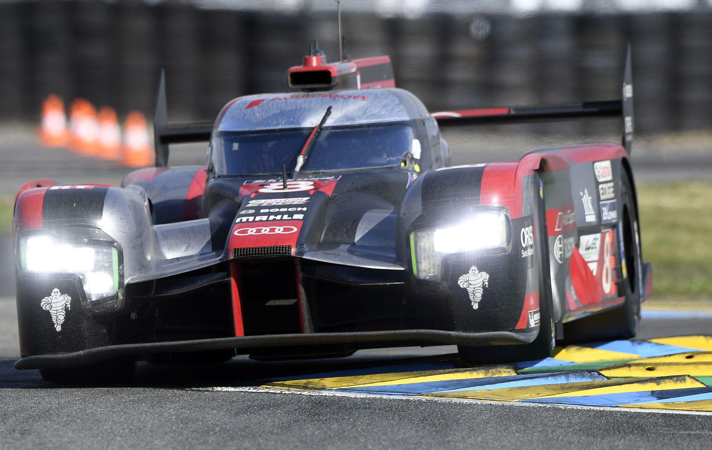
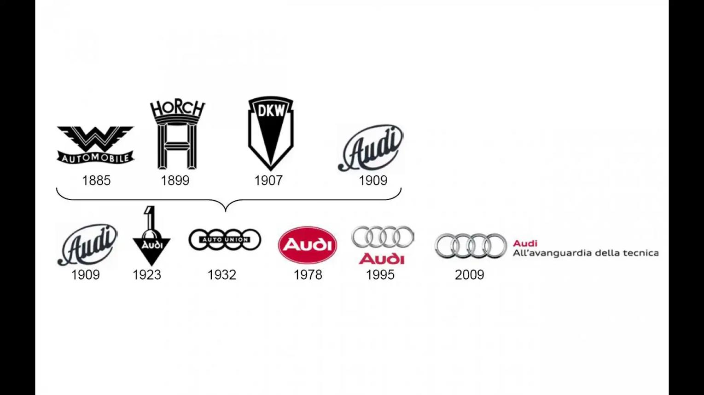

August Horch est un ingénieur allemand passionné d'automobile. En 1899, il crée sa première entreprise, Horch & Cie, où il construit des voitures de luxe reconnues pour leur qualité et leurs performances. À la suite de désaccords avec ses associés, August Horch quitte son entreprise en 1909. Comme il n'a plus le droit d'utiliser son propre nom (« Horch » étant déjà une marque déposée), il cherche un nouveau nom pour sa société. Le mot « Horch » signifie « écoute ! » en allemand. En latin, ce verbe se traduit par « Audi ». C'est ainsi que naît la marque Audi.
En 1909, August Horch fonde officiellement Audi Automobilwerke à Zwickau. En 1910, Audi présente sa première voiture, la Type A. Quelques années plus tard, les modèles Type C remportent plusieurs compétitions automobiles, notamment le difficile Rallye des Alpes autrichiennes, ce qui donne rapidement une excellente réputation à la jeune marque.

En 1932, la crise économique mondiale pousse quatre constructeurs allemands à s'unir :
Ils créent ensemble Auto Union. Le célèbre logo aux quatre anneaux représente cette union : chaque anneau symbolise l'une des quatre marques fondatrices. Ce logo est encore utilisé aujourd'hui par Audi.

Pendant la Seconde Guerre mondiale, Auto Union fabrique principalement des véhicules militaires, des moteurs et du matériel destiné à l'armée allemande. À la fin du conflit, plusieurs usines sont détruites ou se retrouvent dans la zone d'occupation soviétique. L'entreprise doit pratiquement repartir de zéro.

En 1949, Auto Union est recréée à Ingolstadt. En 1965, la marque relance officiellement le nom Audi avec une nouvelle gamme de voitures modernes. Quelques années plus tard, Volkswagen rachète Auto Union et investit massivement dans son développement. Audi commence alors à devenir un constructeur premium reconnu.

En 1980, Audi présente la légendaire Audi Quattro, équipée d'une transmission intégrale permanente. Cette technologie révolutionne le monde du rallye. Les Audi Quattro dominent rapidement le Championnat du monde des rallyes (WRC) grâce à leur excellente motricité sur tous les terrains. Aujourd'hui encore, le système quattro est l'une des signatures de la marque.

Dans les années 1990 et 2000, Audi devient l'un des principaux constructeurs automobiles haut de gamme. La marque lance plusieurs modèles devenus emblématiques :
Audi rivalise désormais avec BMW et Mercedes-Benz sur le marché du luxe.

Aujourd'hui, Audi poursuit sa transition vers les véhicules électriques. Parmi les modèles récents :
Audi développe également des technologies de conduite autonome, des batteries de nouvelle génération et de nouveaux logiciels embarqués.

Audi possède un immense palmarès en sport automobile. La marque a remporté :
Audi a également participé au Rallye Dakar avec le spectaculaire RS Q e-tron, équipé d'une technologie hybride innovante.

